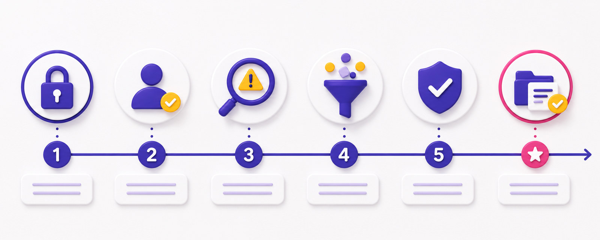

Clôture
Faire le point
Ancrer les acquis, mesurer le chemin parcouru, clôturer sur la confiance.
Visuel à venir
assets/hero-cloture.jpg

Carnet de bord — où j'en suis
Pour chacun des 6 acquis de la journée, positionnez-vous honnêtement. L'échelle est valorisante : tout le monde progresse, personne n'échoue.
Le radar du groupe & le baromètre
Radar mural : une gommette par axe (6 axes = 6 acquis).
On visualise la force du groupe — jamais les individus.
Baromètre retour : reposez une gommette (autre couleur) sur l'affiche du matin :
« Face aux arnaques, maintenant je me sens… ». Le chemin entre les deux nuages, c'est votre journée.
Mes contacts sûrs — à garder sur soi
Card Stop
078 170 170
24 h/24
078 170 170
24 h/24
Message suspect
suspect@safeonweb.be
suspect@safeonweb.be
Le point de repère
safeonweb.be
safeonweb.be
En cas de perte
Ma banque · police locale
Ma banque · police locale
Le mot de la fin
« La journée est bouclée. Une dernière chose : les bons réflexes se partagent.
Ce que vous avez appris aujourd'hui, essayez de le transmettre à un proche cette semaine —
un téléphone protégé en plus autour de vous, c'est autant de moins pour les fraudeurs. »
Tour de clôture : une phrase par personne —
« Le réflexe que je garde. »